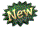
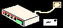
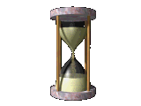
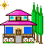

★ Добро пожаловать на мою домашнюю страницу! ★ Сайт лучше всего смотреть в разрешении 1024×768 ★ Новое: раздел «Подключение» уже дозванивается… ★ Не забудьте добавить страницу в Избранное ★ Распишитесь в гостевой книге, мне будет приятно :)

Выпуск №1 · интерактивная экскурсия · ~10 минут
Web 1.0

каким был интернет?
В начале 2000-х интернет был другим. Люди делали личные сайты, экспериментировали с дизайном, пользовались каталогами и ранними поисковиками, а каждая страница ощущалась как чьё-то личное пространство. Эта интерактивная презентация: небольшое путешествие по эпохе Web 1.0 и её современному продолжению в IndieWeb.
Лучший опыт на ПК, 1024×768 и выше

Что нас ждёт 5 остановок по старому вебу
-
01
Подключение

Dial-up, 56 кбит/с и тот самый звук модема.
-
02
Дизайн
Простые HTML-страницы и очень странный дизайн.
-
03
Поиск
Каталоги, рейтинги и первые поисковики.
-
04
Проблемы

Ограничения: скорость, браузеры, кодировки.
-
05
IndieWeb

Neocities, вебринги и личные сайты сегодня.